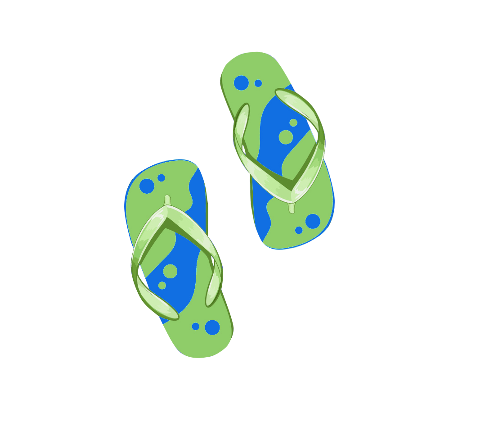

TripShotsMapper
Click on the map to add a new marker, drag and drop it wherever you like, and click on marker to edit and save comment.
If you want to remove a marker, just right-click on the marker. If you want to save your marker and comment, just register an account and sign in!